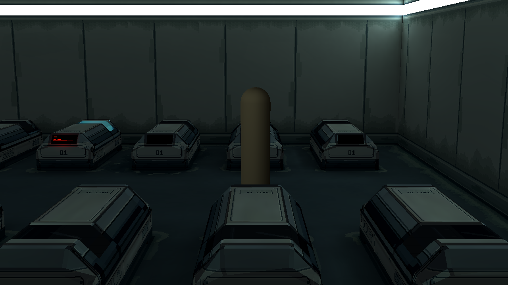

地面去黄修色 · r9
保留全部沉积形状与位置，只把偏黄绿色亮部改成贴近地坪的低饱和冷灰蓝。主地坪底色、墙图、模型、光强与曝光保持。以下均为实际Godot截图，没有截图提亮或全局调色。
说明与源 · 分层Aseprite · 打包Blender工程 · 验证记录
同一光照：旧r8 / 新r9配色
旧色：偏黄绿的沉积亮部
新色：冷灰蓝，同一r8光照

旧r8颜色与光照
新r9颜色，光照与旧版相同
当前配套光照下的新色
颜色诊断：原生配色差异
以下是Base Color诊断，不是正式发光效果。
四边和20舱接触逻辑保留。新候选等待美术审查，不将颜色检查等同最终自然度通过。